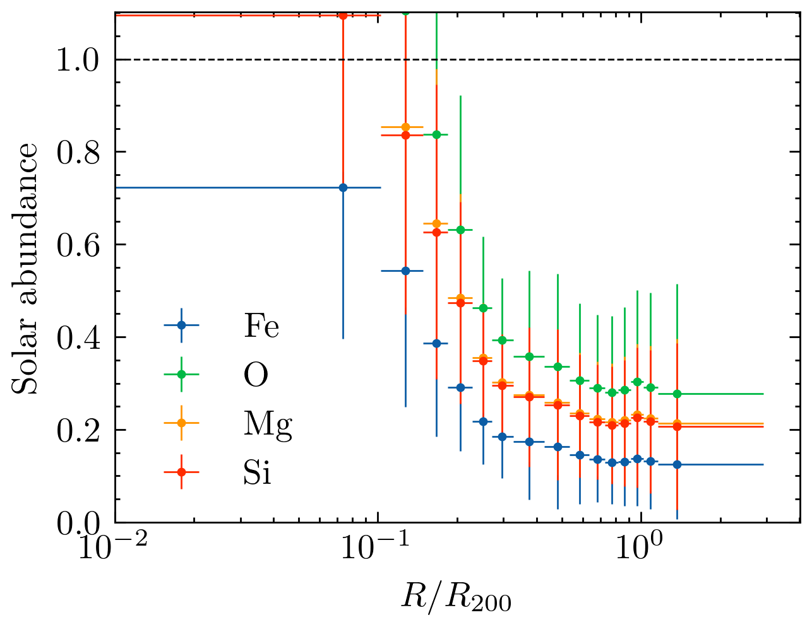
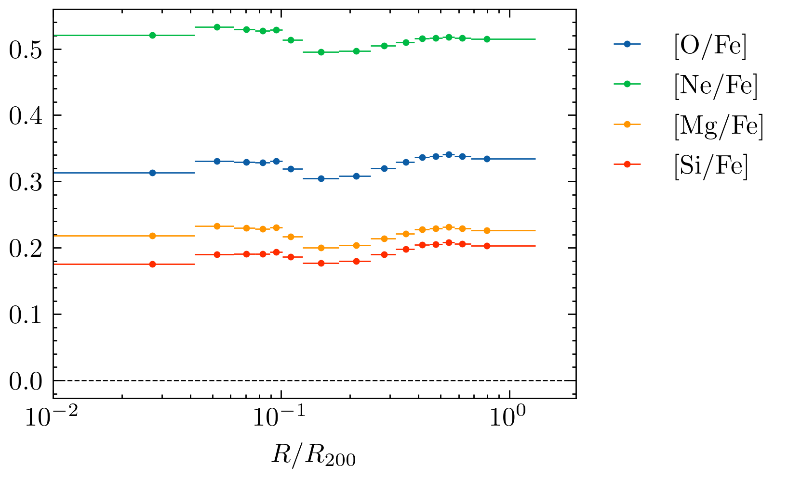
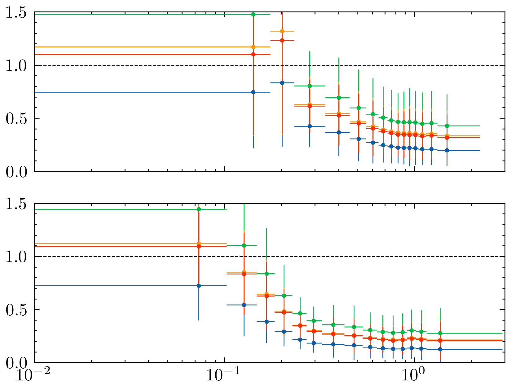
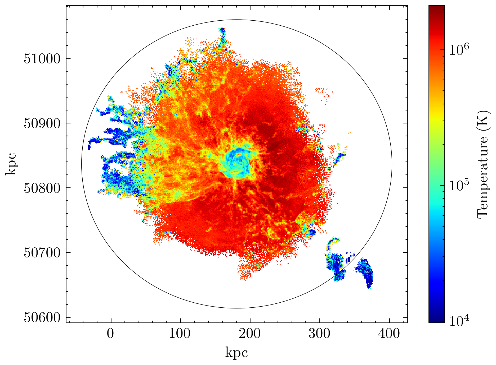
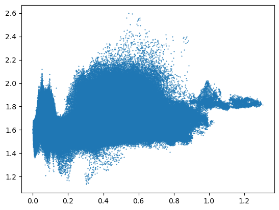
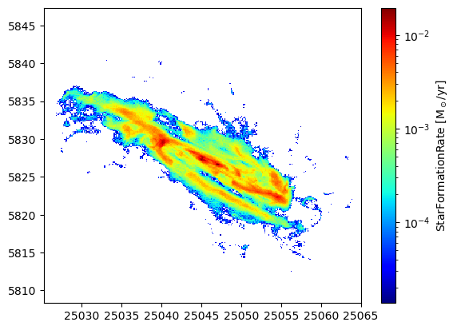
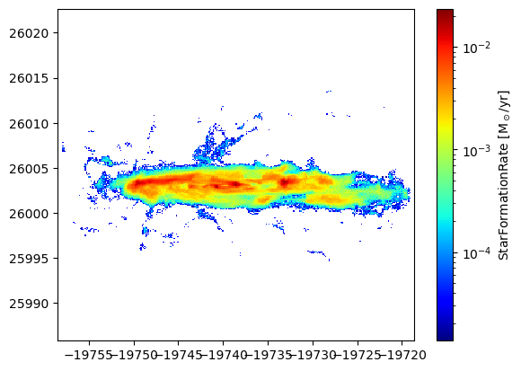

from TNG_catcher.TNG_catcher import *
from TNG_catcher.New import *
h = 0.6774
df = pd.read_csv("./VirialTable.csv")
fe_num = {
"H": 0,
"He": 1,
"Li": 2,
"Be": 3,
"B": 4,
"C": 5,
"N": 6,
"O": 7,
"F": 8,
"Ne": 9,
"Na": 10,
"Mg": 11,
"Al": 12,
"Si": 13,
"P": 14,
"S": 15,
"Cl": 16,
"Ar": 17,
"K": 18,
"Ca": 19,
"Sc": 20,
"Ti": 21,
"V": 22,
"Cr": 23,
"Mn": 24,
"Fe": 25,
"Co": 26,
"Ni": 27,
"Cu": 28,
"Zn": 29,
}
abd = pd.read_csv("./solar_xspec_qiita.csv")
sei2 = "H"
group_num = 15
data_to_save = {}
for sub in [342447, 388544, 421555, 419618]:
data_to_save[sub] = {}
test = SubhaloDataSet(sub)
test.GetAllData()
test.GetSubhaloID(["GFM_Metals"], 0)
x = test.DATA[0]["x"]
y = test.DATA[0]["y"]
z = test.DATA[0]["z"]
H = test.DATA[0]["GFM_Metals"].T[0]
Fe = test.DATA[0]["GFM_Metals"].T[8]
O = test.DATA[0]["GFM_Metals"].T[4]
Mg = test.DATA[0]["GFM_Metals"].T[6]
Si = test.DATA[0]["GFM_Metals"].T[7]
Ne = test.DATA[0]["GFM_Metals"].T[5]
Data = {"H": H, "Fe": Fe, "O": O, "Mg": Mg, "Si": Si, "Ne": Ne}
cmx = test.DATA["cmx"]
cmy = test.DATA["cmy"]
cmz = test.DATA["cmz"]
viri = list(df.query(f"SubhaloID == {sub}")["VirialRadius"])[0]
r = np.sqrt((x - cmx) ** 2 + (y - cmy) ** 2 + (z - cmz) ** 2) / h
X_ = r / viri
# Xについて処理
X = np.sort(X_)
group_X = np.array_split(X, group_num)
data_to_save[sub]["group_X_Mean"] = [np.mean(i) for i in group_X]
group_X_Width = [(np.mean(i) - np.min(i), np.max(i) - np.mean(i)) for i in group_X]
group_X_Width = np.array(group_X_Width).T
data_to_save[sub]["group_X_Width"] = group_X_Width
data_to_save[sub]["abundance"] = {}
for i, sei in enumerate(["Fe", "O", "Mg", "Si", "Ne","H"]):
data_to_save[sub]["abundance"][sei] = {}
Fe_solar = abd["aspl"][fe_num[f"{sei}"]]
H_solar = abd["aspl"][fe_num[f"{sei2}"]]
Fe_num_den = Data[f"{sei}"] / abd["atomicMass"][fe_num[f"{sei}"]]
H_num_den = Data[f"{sei2}"] / abd["atomicMass"][fe_num[f"{sei2}"]]
Y_ = (Fe_num_den / H_num_den) / (Fe_solar / H_solar)
Y = Y_[np.argsort(X_)]
group_Y = np.array_split(Y, group_num)
data_to_save[sub]["abundance"][sei]["group_Y_Mean"] = [
np.mean(i) for i in group_Y
]
group_Y_Std = [np.std(i) for i in group_Y]
data_to_save[sub]["abundance"][sei]["group_Y_Std"] = group_Y_Std
print("Done", sub)
print("All Done")
The following modules installed.
- import illustris_python as il
- import numpy as np
- import pandas as pd
- import os
- import matplotlib.pyplot as plt
- from matplotlib.colors import LogNorm
- import glob
Done 342447
Done 388544
Done 421555
Done 419618
All Done
import pickle
with open("./grouped_subhalo_data_Fe.dict", mode="wb") as f:
pickle.dump(data_to_save, f)
ここから解析
dict_keys([342447, 388544, 421555, 419618])
dict_keys(['Fe', 'O', 'Mg', 'Si', 'H'])
dict_keys(['group_X_Mean', 'group_X_Width', 'abundance'])
_id = 342447
plt.figure(dpi=400)
for i, sei in enumerate(["Fe", "O", "Mg", "Si"]):
plt.errorbar(
data_to_save[_id]["group_X_Mean"],
data_to_save[_id]["abundance"][sei]["group_Y_Mean"],
xerr=data_to_save[_id]["group_X_Width"],
fmt=".",
yerr=data_to_save[_id]["abundance"][sei]["group_Y_Std"],
lw=0.5,
label=sei,
markersize=3,
)
plt.ylabel("Solar abundance")
plt.xlabel("$R/R_{200}$")
plt.legend(frameon=False)
plt.xscale("log")
plt.xlim(1e-2,)
plt.ylim(
0,
)
plt.axhline(1, color="k", lw=0.5, ls="--")
plt.show()

_id = 342447
plt.figure(dpi=400)
for sei in ["O","Ne", "Mg", "Si"]:
plt.errorbar(
data_to_save[_id]["group_X_Mean"],
np.log10(data_to_save[_id]["abundance"][sei]["group_Y_Mean"]),
xerr=data_to_save[_id]["group_X_Width"],
fmt=".",
lw=0.5,
markersize=3,
label=f"[{sei}/Fe]"
)
plt.axhline(0, color="k", lw=0.5, ls="--")
plt.xlabel("$R/R_{200}$")
plt.xscale("log")
plt.xlim(1e-2,)
plt.legend(loc='upper left', bbox_to_anchor=(1, 1))
plt.show()

# plt.figure(figsize=(4,3),dpi=400)
# print(plt.rcParams.get('figure.figsize')) (3.5, 2.625)
fig,ax = plt.subplots(2,1,figsize=np.array((3.5, 2.625))*1.4,dpi=400,sharex="all")
ax = ax.flatten()
for j, _id in enumerate([388544, 421555]):
for i, sei in enumerate(["Fe", "O", "Mg", "Si"]):
ax[j].errorbar(
pure_data[_id]["group_X_Mean"],
pure_data[_id]["abundance"][sei]["group_Y_Mean"],
xerr=pure_data[_id]["group_X_Width"],
fmt=".",
yerr=pure_data[_id]["abundance"][sei]["group_Y_Std"],
lw=0.5,
label=sei,
markersize=3,
)
# plt.ylabel("Solar abundance")
# plt.xlabel("$R/R_{200}$")
# plt.legend(frameon=False)
ax[j].set_xscale("log")
ax[j].set_xlim(1e-2,)
ax[j].set_ylim(0,1.5)
ax[j].axhline(1, color="k", lw=0.5, ls="--")
plt.show()

from TNG_catcher.TNG_catcher import *
from TNG_catcher.New import *
import matplotlib.patches as patches
import scienceplots
plt.style.use(["science","cjk-tc-font"])
df = pd.read_csv("./VirialTable.csv")
h = 0.6774
gamma = 5.0/3.0
KB = 1.3807e-16
mp = 1.6726e-24
bin = 301
plt.figure(figsize=np.array([4,3])*1.3,dpi=400)
ax = plt.axes()
sub = 342447
test = SubhaloDataSet(sub)
test.GetAllData()
test.GetSubhaloID(["InternalEnergy","ElectronAbundance","GFM_MetalsTagged"],0)
x = test.DATA[0]["x"]/h
y = test.DATA[0]["y"]/h
z = test.DATA[0]["z"]/h
m = test.DATA[0]["Masses"]
u = test.DATA[0]["InternalEnergy"]
E = test.DATA[0]["ElectronAbundance"]
cmx = test.DATA["cmx"]/h
cmy = test.DATA["cmy"]/h
cmz = test.DATA["cmz"]/h
R = test.calc_rot()
x,y,z = R@np.array([x,y,z])
cmx,cmy,cmz = R@np.array([cmx,cmy,cmz])
mu = 4/(1 + 3*0.76 + 4*0.76*E) * mp
temperature = (gamma-1)* (u/KB)* mu* 1e10
hed, xed, yed = np.histogram2d(x,y,weights=temperature,bins=bin)
hedn, xed, yed = np.histogram2d(x,y,bins=bin)
gg = (hed/hedn).T
plt.pcolormesh(xed,yed,gg,cmap="jet",norm=LogNorm())
# ax[i].colorbar(label="Temperature [K]")
viri = list(df.query(f"SubhaloID == {sub}")["VirialRadius"])[0]
r = np.sqrt((x-cmx)**2 + (y-cmy)**2 + (z-cmz)**2)
c = patches.Circle(xy=(cmx, cmy), radius=viri, fill=False, ec='k', lw=0.3)
ax.add_patch(c)
# hed_LL = np.array(hed_LL)
# print(hed_LL.min(),hed_LL.max())
# axpos = ax[1].get_position()
# cbar_ax = fig.add_axes([0.95, 0.15, 0.02, axpos.height*2])
# mappable = ScalarMappable(cmap='jet', norm=LogNorm(vmax=3366788.4482521187,vmin=9716.946258544922))
# # mappable._A = []
# # fig.colorbar(mappable, cax=cbar_ax)
plt.colorbar(label="Temperature (K)")
plt.xlabel("kpc")
plt.ylabel("kpc")
# plt.xticks(color="w")
# plt.yticks(color="w")
# plt.show()
plt.savefig(f"./0213/a_temp.png",dpi=400)
# plt.savefig(f"./pic0202/a_temp.svg")
# plt.savefig(f"./pic0202/a_temp.pdf")
/tmp/ipykernel_285205/1062123610.py:35: RuntimeWarning: invalid value encountered in divide
gg = (hed/hedn).T

5.9416714
0.3939920258810234
test.GetSubhaloID(["GFM_Metals","StarFormationRate"], 0)
H = test.DATA[0]["GFM_Metals"].T[0]
Fe = test.DATA[0]["GFM_Metals"].T[8]
O = test.DATA[0]["GFM_Metals"].T[4]
Mg = test.DATA[0]["GFM_Metals"].T[6]
Si = test.DATA[0]["GFM_Metals"].T[7]
Ne = test.DATA[0]["GFM_Metals"].T[5]
sei = "Mg"
sei2 = "Fe"
Data = {"H": H, "Fe": Fe, "O": O, "Mg": Mg, "Si": Si, "Ne": Ne}
Fe_solar = abd["aspl"][fe_num[f"{sei}"]]
H_solar = abd["aspl"][fe_num[f"{sei2}"]]
Fe_num_den = Data[f"{sei}"] / abd["atomicMass"][fe_num[f"{sei}"]]
H_num_den = Data[f"{sei2}"] / abd["atomicMass"][fe_num[f"{sei2}"]]
Y_ = (Fe_num_den / H_num_den) / (Fe_solar / H_solar)
[<matplotlib.lines.Line2D at 0x7ff58aa093c0>]

array([7.2007177e-05, 9.4962394e-05, 1.0792154e-04, ..., 0.0000000e+00,
0.0000000e+00, 0.0000000e+00], dtype=float32)
hed, xed, yed = np.histogram2d(x,y,weights=StarFormationRate,bins=bin)
hedn, xed, yed = np.histogram2d(x,y,bins=bin)
gg = (hed).T
plt.pcolormesh(xed,yed,gg,cmap="jet",norm=LogNorm())
plt.colorbar(label="StarFormationRate [M$_\odot$/yr]")
<matplotlib.colorbar.Colorbar at 0x7ff5838baa40>

15.387185
hed, xed, yed = np.histogram2d(x,y,weights=StarFormationRate,bins=bin)
hedn, xed, yed = np.histogram2d(x,y,bins=bin)
gg = (hed).T
plt.pcolormesh(xed,yed,gg,cmap="jet",norm=LogNorm())
plt.colorbar(label="StarFormationRate [M$_\odot$/yr]")
<matplotlib.colorbar.Colorbar at 0x7ff5836774c0>
